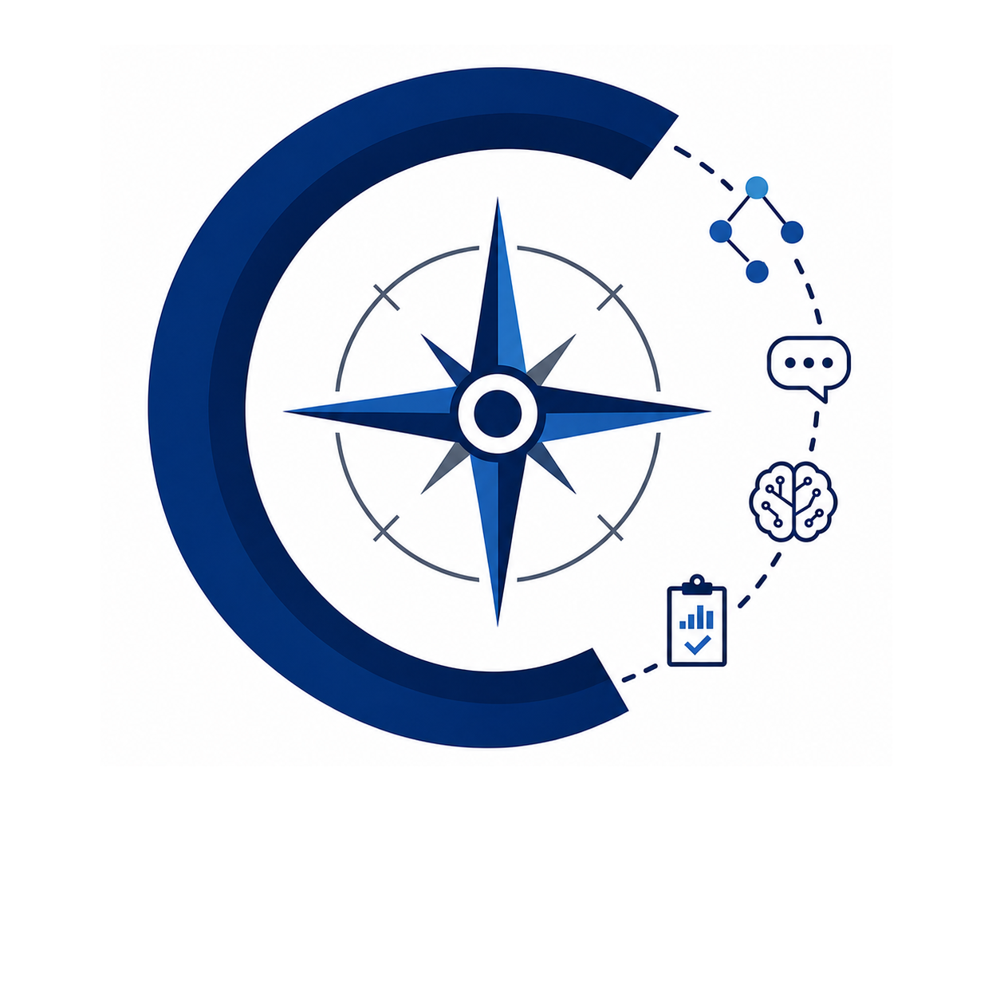

The COMPASS lab (Computational Outlooks on Multilingual Processing, Assessment, and Semantic Structures) is led by Professor Shira Wein. COMPASS focuses on representing meaning across languages and model intepretability. Currently, I am interested in developing and using formal semantic representations (such as Abstract Meaning Representation and Uniform Meaning Representation) for computational applications and linguistic analyses, as well as examining and multilingual language data via interpretability approaches.

Send me an email detailing your interest in NLP research and your CV attached. Thanks!
Nathan Wolf, UMass Amherst'26 (2025 - )
Ellie Yang, Amherst College'27 (2025 - )
Thu Hoang, Amherst College'28 (2025 -)
Jiyuan Ji, Amherst College'28 (2025 - )
Weixin Lin, Amherst College'28 (2026 - )
Anna Serbina, Amherst College'25 (2024 - 2025) → Ph.D. Computer Science, USC Information Sciences Institute
Reihaneh Iranmanesh, Amherst College'25 (2024) → Ph.D. Computer Science, Georgetown University
Jason DeGraaff, Amherst College'25 (2024) → Computer Science Teacher, Proof School
Emma Markle, Amherst College'26 (2024-2026) → Ph.D. Computer Science, Northeastern University
Ryan Ji, Amherst College'26 (2025-2026) → Product Engineer, Eudia (Legal AI)
Ryan Hughes, Amherst College'26 (2025) → Music Teacher, Amherst College
Skyler McDonnell, Amherst College'26 (2025)
Javier Gutierrez Bach, Amherst College'26 (2025)
Rocky Klopfenstein, Amherst College'27 (2025)
Mina Yang, Amherst College'27 (2025)
Bianca Delgado, Amherst College'27 (2025)
Yichen Liu, Amherst College'28 (2025)